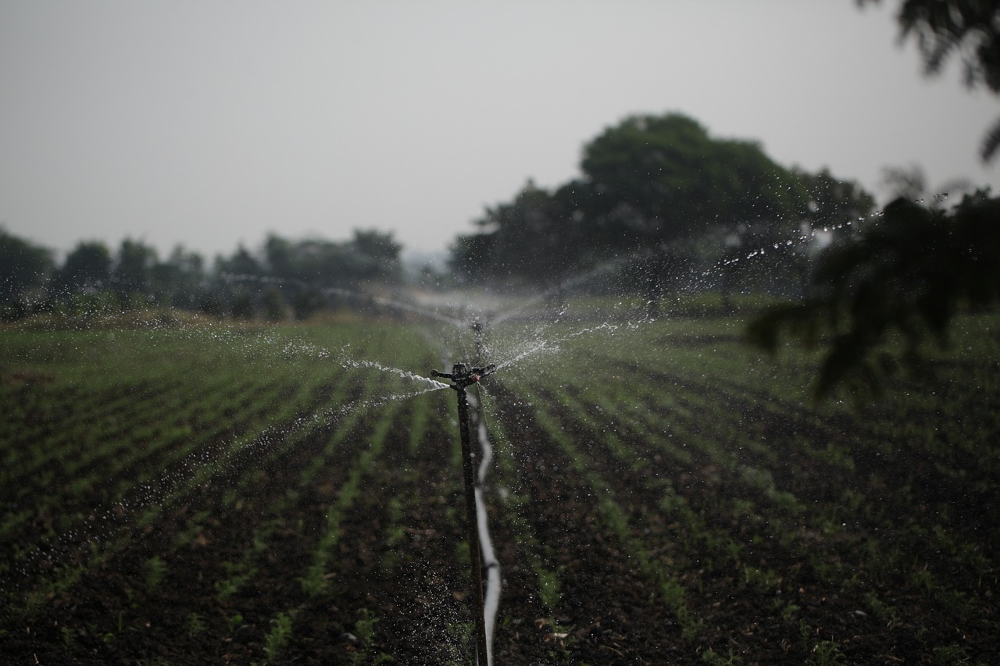

PROJECTS THAT ARE WORTHY OF GOVERNMENT INTERVENTION
SUSTAINABLE FARMING PRACTICES ADOPTION PROGRAM
Description: Implement a program to educate and incentivize farmers to adopt sustainable farming practices such as organic farming, agroecology, and permaculture. This could involve training sessions, providing financial incentives, and promoting eco-friendly agricultural methods.
WATER CONSERVATION AND IRRIGATION MANAGEMENT
Description: Develop projects focused on efficient water use in agriculture. This may include the promotion of drip irrigation systems, rainwater harvesting, and the construction of water storage facilities. The goal is to ensure water availability for crops while minimizing wastage.

SOIL HEALTH IMPROVEMENT INITIATIVE
Description: Launch projects to enhance soil health through organic matter incorporation, cover cropping, and reduced chemical inputs. Soil testing and nutrient management programs can be implemented to guide farmers in optimizing soil fertility.